JPC-12 on the X6200: everything captured, by coil setting
Recorded remotely from the X6200, Dublin, Ohio (EN80kc), night of 2026-11-07 (23:50-04:28 UTC). Receive only. Each recording was tuned from the radio's own spectrum, and its coil setting follows from the time it was made.
Red-gold: 20 m (14 MHz)
Slider on the red-gold mark, near the top of the coil.
- On the air
- 23:50-02:34 UTC
6:50-9:34 PM EST, Nov 7 - Tunes
- 20 m (14 MHz)
- Preamp
- on
- Recordings
- 19
- FT8 on 14.074
- 3,030 messages
242 stations, 32 countries
Farthest FT8 stations (from their grid squares): C91RU Mozambique (13,789 km), D2UY Angola (10,920 km), LU9XJR Argentina (10,277 km).
Everything heard at this setting in time order; click a frequency to jump to it
| UTC | Frequency | Mode | What | Result |
|---|---|---|---|---|
| 23:58-02:34 | 14.074 MHz | USB | FT8 (in FT8 Live) | 3,030 messages, 242 stations, 32 countries; 8.2 per 15 s slot |
| 01:01 | 14.0285 MHz | USB | CW (Morse), ARRL Sweepstakes | 1 decoded: tone 1708 Hz, 30 WPM: U W4IX NR 349 U K0SN 75 MT TU K0S |
| 01:02 | 14.0695 MHz | USB | PSK31 | One weak, narrow signal at 1377 Hz, coming and going. |
| 01:02 | 14.0780 MHz | USB | JS8Call | One weak signal near 1727 Hz. |
| 01:05 | 14.0800 MHz | USB | FT4 | 1 decoded: 01:05:22 CQ XQ3SK FF46 |
| 01:05 | 14.0825 MHz | USB | RTTY | No RTTY signal in this 30 s window. |
| 01:06 | 14.3050 MHz | USB | SSB voice | No voice found. |
| 01:07 | 14.2300 MHz | USB | SSTV | No SSTV picture was being sent during these 60 s; the band is noise only. |
| 01:08 | 14.6700 MHz | AM | CHU, Canada's time station | CHU (Ottawa) not heard: the S-meter sat at its floor and the audio is noise. |
| 01:08 | 15.0000 MHz | AM | WWV/WWVH time station | WWV/WWVH not heard: noise only. |
| 01:09 | 15.7700 MHz | AM | Shortwave broadcast | A shortwave broadcast station (15.770 MHz is one of WRMI's frequencies, Okeechobee, Florida). |
| 01:10 | 14.0956 MHz | USB | WSPR beacons | One full 2-minute WSPR cycle (01:10 UTC) through the repo's own wsprd: no spots, and no WSPR traces are visible in the… |
| 01:12 | 14.0990 MHz | USB | NCDXF/IARU beacons | 0 of 5 beacons heard |
| 01:22 | 14.0780 MHz | USB | JS8Call | A second try after the radio came back (three slots, 01:22:30-01:23:16 UTC): the band is noise only here, no JS8 trans… |
| 01:24 | 14.0990 MHz | USB | NCDXF/IARU beacons | 0 of 17 beacons heard |
| 01:30 | 14.000-14.350 MHz | - | Spectrum: the 20 m band | a picture of the whole range, below |
| 01:31 | 14.0232 MHz | USB | CW (Morse), ARRL Sweepstakes | The strongest signal in the spectrum (14.0239 MHz, +26 dB at its peak). |
| 01:31 | 14.0395 MHz | USB | CW (Morse), ARRL Sweepstakes | 2 decoded: tone 1292 Hz, 30 WPM: E CD SS N6 IO CQ SSN6HO N6RO CQ SS N6RO N6RO |
| 01:32 | 14.0440 MHz | USB | CW (Morse), ARRL Sweepstakes | 1 decoded: tone 829 Hz, 38 WPM: E IIE NI IMZ7 3*I<ERR> E E *L7SB 76 AK E 4TM 8 E AI 7 M Z M… |
| 01:32 | 14.0545 MHz | USB | CW (Morse), ARRL Sweepstakes | 1 decoded: tone 2591 Hz, 33 WPM: TU W6EU N0AVV 17PU B W6EU 58 SV |
| 01:33 | 14.1172 MHz | USB | A steady carrier from the spectrum | One of the steady lines in the spectrum: nothing keyed or modulated on it, so a carrier or local interference, not a s… |
| 02:13 | 13.4-15.9 MHz | - | Spectrum: everything this setting reaches | a picture of the whole range, below |
The band, from the radio's own spectrum 14.000-14.350 MHz, 01:30 UTC, seven 50 kHz views stitched
Where the stations were: CW (Sweepstakes) packed at 14.020-14.060, FT8 at 14.075, and no voice signals anywhere in 14.150-14.350; the thin steady lines at 14.118, 14.180, 14.243 and 14.306 are carriers or interference. The CW recordings below were tuned from this picture.
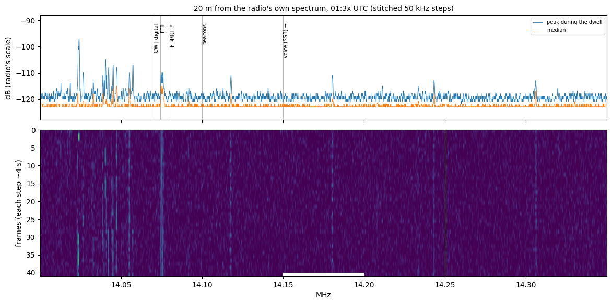
Everything the 20 m coil setting reaches 13.4-15.9 MHz, 02:13 UTC, charger on, preamp on, 25 views of 100 kHz
Most of the steady lines are not stations: they fall on three evenly spaced combs (98.24, ~102.9 and ~95.6 kHz apart, triangles), the harmonics of switching power supplies. What is left: CW at 14.000-14.045, FT8 at 14.074 (weak, below the marks here), a pulsing signal at 13.560 MHz in the ISM band, and weak narrow signals at 14.68-14.86 MHz outside the ham band.
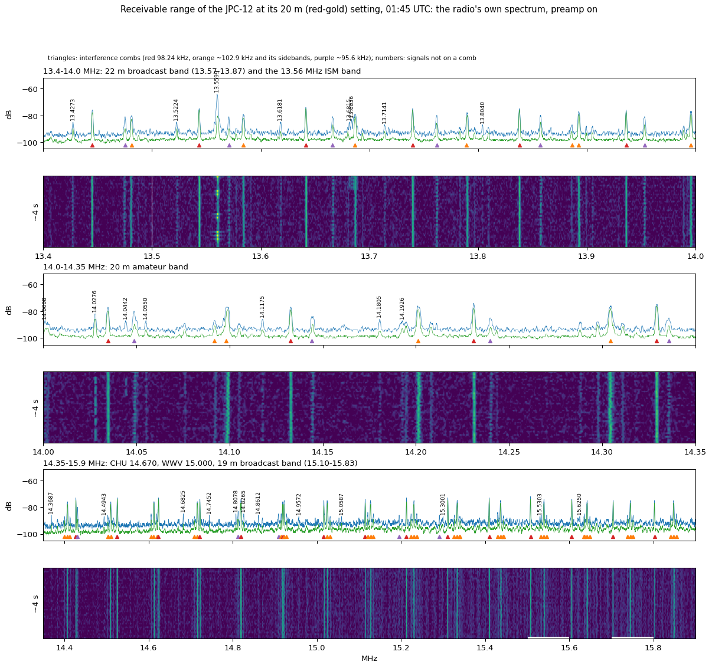
Red-gold CW (Morse), ARRL Sweepstakes 14.0285 MHz USB · 01:01:33 UTC · 30 s · S-meter -103 dBm
The ARRL Sweepstakes contest. The strongest signal decodes as a complete contest exchange: K0SN (Montana) sends W4IX serial 349, class U, licensed 75, section MT, then TU. Weaker CW signals are visible at 1170, 2000 and 2340 Hz but were below what the decoder copies cleanly.
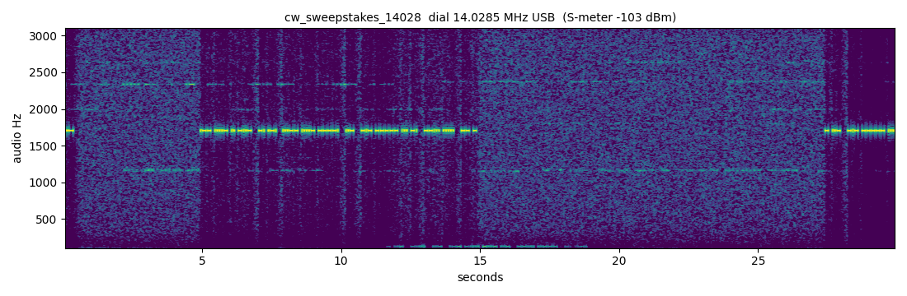
- tone 1708 Hz, 30 WPM: U W4IX NR 349 U K0SN 75 MT TU K0S
Red-gold PSK31 14.0695 MHz USB · 01:02:06 UTC · 30 s · S-meter -115 dBm
One weak, narrow signal at 1377 Hz, coming and going. Too weak to decode: the PSK31 decoder copies a synthetic test message exactly, so the signal, not the decoder, is the limit.
- nothing decoded in this recording
Red-gold JS8Call 14.0780 MHz USB · 01:02:45 UTC · 31 s · S-meter -116 dBm
One weak signal near 1727 Hz. Decoded offline with the radio's own JS8 receiver (tools/js8_play, all four speeds): nothing. The same player decodes a synthetic two-station JS8 band exactly, so the signal was too weak or not JS8.
- nothing decoded in this recording
Red-gold FT4 14.0800 MHz USB · 01:05:07 UTC · 31 s · S-meter -117 dBm
FT4 (FT8's faster cousin, 7.5 s slots): one decode, a station in central Chile calling CQ.
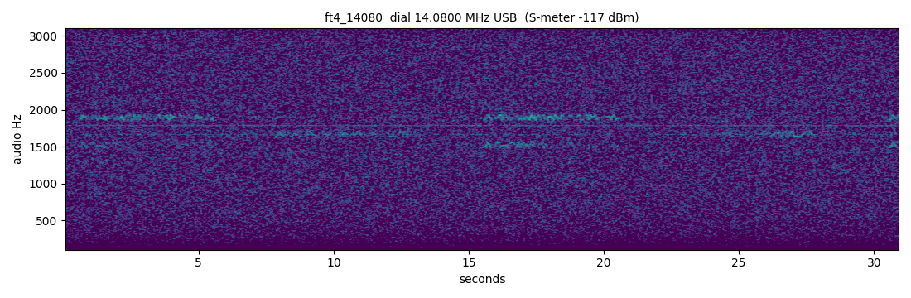
- 01:05:22 CQ XQ3SK FF46
Red-gold RTTY 14.0825 MHz USB · 01:05:41 UTC · 30 s · S-meter -117 dBm
No RTTY signal in this 30 s window. The RTTY decoder copies a synthetic test signal correctly.
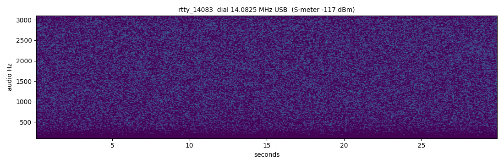
- nothing decoded in this recording
Red-gold SSB voice 14.3050 MHz USB · 01:06:46 UTC · 25 s · S-meter -114 dBm
No voice found. The 'loudest' spot on 14.150-14.350 was a steady comb of tones 60 Hz apart (the horizontal lines at 600-1050 Hz): electrical interference, most likely from something near the antenna, not a station.
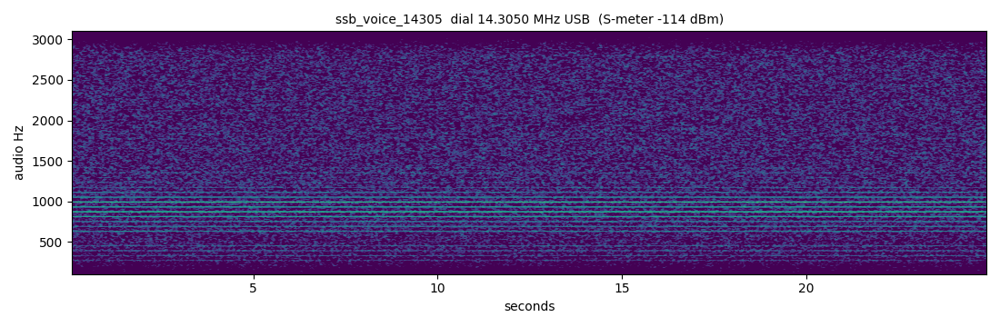
Red-gold SSTV 14.2300 MHz USB · 01:07:14 UTC · 60 s · S-meter -116 dBm
No SSTV picture was being sent during these 60 s; the band is noise only.
Red-gold CHU, Canada's time station 14.6700 MHz AM · 01:08:18 UTC · 20 s · S-meter -121 dBm
CHU (Ottawa) not heard: the S-meter sat at its floor and the audio is noise.
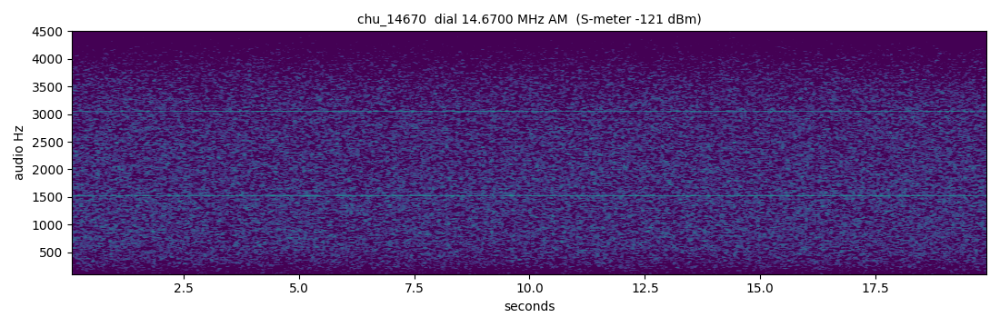
Red-gold WWV/WWVH time station 15.0000 MHz AM · 01:08:41 UTC · 20 s · S-meter -121 dBm
WWV/WWVH not heard: noise only. 15 MHz is outside the 20 m coil setting and usually fades after dark.
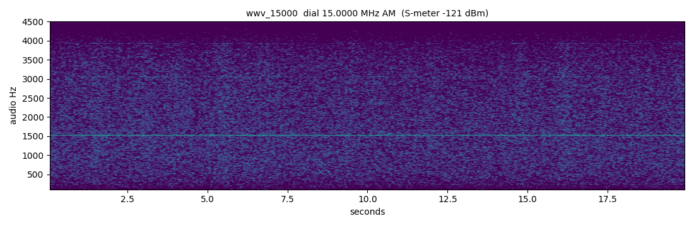
Red-gold Shortwave broadcast 15.7700 MHz AM · 01:09:04 UTC · 20 s · S-meter -117 dBm
A shortwave broadcast station (15.770 MHz is one of WRMI's frequencies, Okeechobee, Florida). Weak, but programme audio is there: the curved stripes in the first 12 s are voice or singing. Listen to the recording.
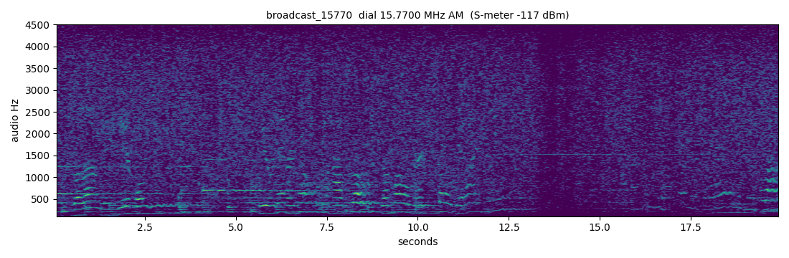
Red-gold WSPR beacons 14.0956 MHz USB · 01:10:00 UTC · 116 s · S-meter -117 dBm
One full 2-minute WSPR cycle (01:10 UTC) through the repo's own wsprd: no spots, and no WSPR traces are visible in the 1400-1600 Hz window either.
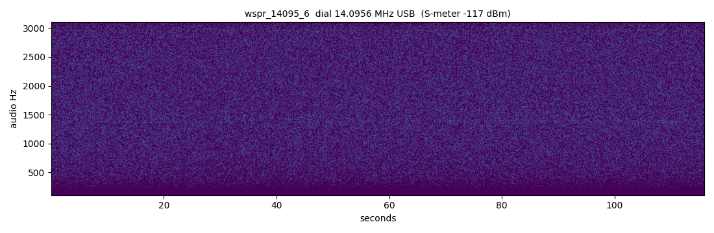
- nothing decoded in this recording
Red-gold NCDXF/IARU beacons 14.0990 MHz USB · 01:12:00 UTC · 181 s · S-meter -118 dBm
Cut short at 60 s: the radio rebooted onto the test kernel at 01:13 UTC. Of the six beacon slots that were recorded (4U1UN New York through VK6RBP Australia), none stands above the noise.
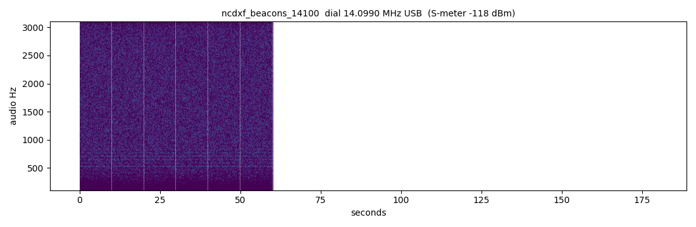
- VE8AT Inuvik, Canada: not heard (+10 dB)
- W6WX California: not heard (+10 dB)
- KH6RS Hawaii: not heard (+10 dB)
- ZL6B New Zealand: not heard (+10 dB)
- VK6RBP Western Australia: not heard (+10 dB)
Red-gold JS8Call 14.0780 MHz USB · 01:22:30 UTC · 46 s · S-meter -117 dBm
A second try after the radio came back (three slots, 01:22:30-01:23:16 UTC): the band is noise only here, no JS8 transmissions at all, so nothing to decode.
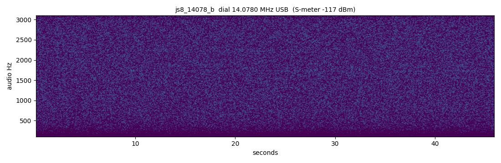
- nothing decoded in this recording
Red-gold NCDXF/IARU beacons 14.0990 MHz USB · 01:24:00 UTC · 181 s · S-meter -118 dBm
The full 3-minute beacon cycle, recorded after the radio came back (01:24 UTC). None of the 18 beacons stands above the noise: 20 m had mostly closed by then.
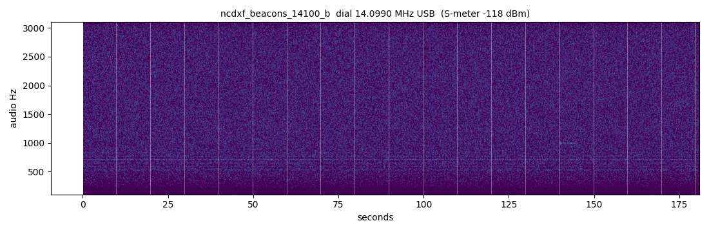
- VE8AT Inuvik, Canada: not heard (+10 dB)
- W6WX California: not heard (+10 dB)
- KH6RS Hawaii: not heard (+10 dB)
- ZL6B New Zealand: not heard (+10 dB)
- VK6RBP Western Australia: not heard (+10 dB)
- JA2IGY Japan: not heard (+11 dB)
- RR9O Siberia, Russia: not heard (+10 dB)
- VR2B Hong Kong: not heard (+10 dB)
- 4S7B Sri Lanka: not heard (+10 dB)
- ZS6DN South Africa: not heard (+10 dB)
- 5Z4B Kenya: not heard (+11 dB)
- 4X6TU Israel: not heard (+10 dB)
- OH2B Finland: not heard (+10 dB)
- CS3B Madeira: not heard (+14 dB)
- LU4AA Argentina: not heard (+10 dB)
- OA4B Peru: not heard (+10 dB)
- YV5B Venezuela: not heard (+10 dB)
Red-gold CW (Morse), ARRL Sweepstakes 14.0232 MHz USB · 01:31:12 UTC · 30 s · S-meter -115 dBm
The strongest signal in the spectrum (14.0239 MHz, +26 dB at its peak). It was only on in bursts while recorded, and nothing copied cleanly.
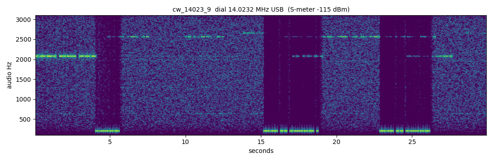
- nothing decoded in this recording
Red-gold CW (Morse), ARRL Sweepstakes 14.0395 MHz USB · 01:31:45 UTC · 30 s · S-meter -116 dBm
Tuned from the spectrum: two Sweepstakes stations calling CQ, N6RO (California) at 14.0408 and N6AR at 14.0421, plus part of an exchange to N0AX.
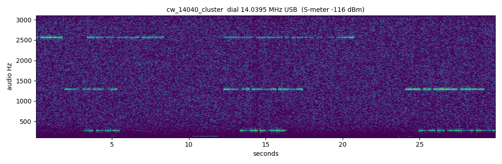
- tone 1292 Hz, 30 WPM: E CD SS N6 IO CQ SSN6HO N6RO CQ SS N6RO N6RO
- tone 2566 Hz, 33 WPM: N N6AR CQ SS N6AR N6AR N0AX 135 A N6RF II EH NFL E E E
Red-gold CW (Morse), ARRL Sweepstakes 14.0440 MHz USB · 01:32:18 UTC · 30 s · S-meter -116 dBm
Tuned from the spectrum: a noisy copy, but KL7SB in Alaska comes through, with its exchange's '76 AK' and 'TU KL7SB'.
- tone 829 Hz, 38 WPM: E IIE NI IMZ7 3*I<ERR> E E *L7SB 76 AK E 4TM 8 E AI 7 M Z MEE EE E N* U T TU KL7SB
Red-gold CW (Morse), ARRL Sweepstakes 14.0545 MHz USB · 01:32:51 UTC · 30 s · S-meter -113 dBm
Tuned from the spectrum: W6EU sending its exchange, class B, licensed '58, section SV (Sacramento Valley), with 'TU' before it.
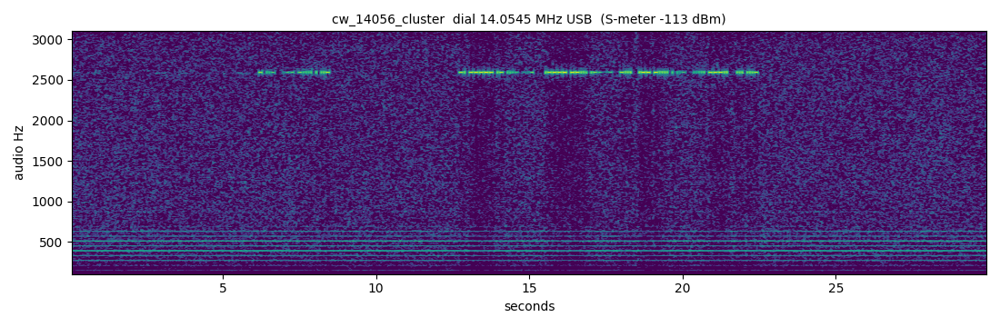
- tone 2591 Hz, 33 WPM: TU W6EU N0AVV 17PU B W6EU 58 SV
Red-gold A steady carrier from the spectrum 14.1172 MHz USB · 01:33:24 UTC · 15 s · S-meter -116 dBm
One of the steady lines in the spectrum: nothing keyed or modulated on it, so a carrier or local interference, not a station.
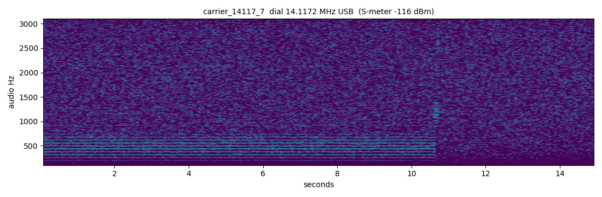
Red-silver: 40 m (7 MHz), plus the VHF tests
Slider on the red-silver mark, at the bottom of the coil.
- On the air
- 02:38-04:18 UTC
9:38-11:18 PM EST - Tunes
- 40 m (7 MHz), plus the VHF tests
- Preamp
- on
- Recordings
- 27
- FT8 on 7.074
- 4,309 messages
343 stations, 33 countries
Farthest FT8 stations (from their grid squares): ZS1WC South Africa (13,585 km), V51NA Namibia (12,426 km), 4X1UF Israel (9,739 km).
Everything heard at this setting in time order; click a frequency to jump to it
| UTC | Frequency | Mode | What | Result |
|---|---|---|---|---|
| 02:38-04:18 | 7.074 MHz | USB | FT8 (in FT8 Live) | 4,309 messages, 343 stations, 33 countries; 16.8 per 15 s slot |
| 02:39 | 6.9-7.9 MHz | - | Spectrum: everything this setting reaches | a picture of the whole range, below |
| 02:41 | 7.0295 MHz | USB | CW (Morse), ARRL Sweepstakes | 1 decoded: tone 573 Hz, 46 WPM: H1 LA IPEEH**I* EE* IE TU K6KU UD K5KU E SS K5OK WS K1OK DD… |
| 02:42 | 7.0400 MHz | USB | CW (Morse), ARRL Sweepstakes | 1 decoded: tone 2703 Hz, 26 WPM: NR ETV W6PH E CQ SS W6PH W6PH E WAT EKHEA WA6KHK 508 B I |
| 02:42 | 7.2245 MHz | LSB | SSB voice (LSB) | The strongest voice in the spectrum (7.2202), tuned from the zoomed spectrum to 7.2245 LSB: a voice QSO, clear speech. |
| 02:43 | 7.2510 MHz | LSB | SSB voice (LSB) | Voice at 7.2501 recorded in LSB: speech, but with a steady 1 kHz whistle, a carrier at 7.250: this is an AM signal. |
| 02:44 | 7.2660 MHz | LSB | SSB voice (LSB) | Voice at 7.2651 in LSB: speech with the same 1 kHz whistle, an AM signal (carrier 7.265). |
| 02:44 | 7.1600 MHz | LSB | SSB voice (LSB) | Voice at 7.1600, tuned from the zoomed spectrum to 7.160 LSB. |
| 02:45 | 7.5050 MHz | AM | Shortwave broadcast | The strongest broadcaster on the sweep, 7.505 MHz (WRNO, New Orleans, uses this frequency): clear speech and music. |
| 02:45 | 7.3550 MHz | AM | Shortwave broadcast | 41 m broadcast, 7.355 MHz: weaker, programme audio under the noise. |
| 02:45 | 7.4900 MHz | AM | Shortwave broadcast | 41 m broadcast, 7.490 MHz (a frequency WBCQ uses). |
| 02:46 | 7.5700 MHz | AM | Shortwave broadcast | 41 m broadcast, 7.570 MHz (a frequency WRMI uses). |
| 02:46 | 7.8500 MHz | AM | CHU, Canada's time station | CHU (Ottawa) not heard: noise only, and nothing showed at 7.850 in the spectrum. |
| 02:46 | 7.0695 MHz | USB | PSK31 | PSK31 window: the decoder's output was noise letters only, no real copy (it decodes a test signal exactly). |
| 02:47 | 7.0890 MHz | USB | RTTY | The digital group at 7.0906-7.098: not RTTY that decodes; the output was noise letters only. |
| 02:48 | 7.0475 MHz | USB | FT4 | 2 decoded: 02:48:15 KM6TAU KQ4CRY R-10 |
| 02:48 | 7.0780 MHz | USB | JS8Call | 4 decoded: ~02:48:52 -14 dB dt +0.0 1192.5 Hz turbo |
| 02:49 | 7.0386 MHz | USB | WSPR beacons | 6 decoded: -14 dB dt +0.2 7.040132 MHz drift +0 K5NAV DM55 23 |
| 02:55 | 7.2500 MHz | AM | AM voice | The 7.250 voice in AM, as it is sent: no whistle. |
| 02:55 | 7.2650 MHz | AM | AM voice | The 7.265 voice in AM. |
| 03:34 | 87.9-107.9 MHz | WFM | FM broadcast scan, 101 channels | about 15 stations; strongest 92.3 MHz at +39 dB (-82 dBm) |
| 03:34 | 92.3000 MHz | WFM | FM broadcast | FM broadcast channel found by the scan, +39 dB |
| 03:35 | 97.9000 MHz | WFM | FM broadcast | FM broadcast channel found by the scan, +31 dB |
| 03:35 | 103.9000 MHz | WFM | FM broadcast | FM broadcast channel found by the scan, +29 dB |
| 03:46 | 118-137 MHz | AM | Airband scan | the 'busiest' channels were the radio's 122.880 MHz spur; no aircraft voice |
| 03:46 | 122.8750 MHz | AM | Airband (aircraft, ATIS) | Around the radio's own 122.880 MHz clock spur (+59 dB): the airband scan's 'busiest' channels were the spur, not aircr… |
| 03:46 | 122.9250 MHz | AM | Airband (aircraft, ATIS) | Around the radio's own 122.880 MHz clock spur (+59 dB): the airband scan's 'busiest' channels were the spur, not aircr… |
| 03:47 | 122.8250 MHz | AM | Airband (aircraft, ATIS) | Around the radio's own 122.880 MHz clock spur (+59 dB): the airband scan's 'busiest' channels were the spur, not aircr… |
| 03:47 | 122.9750 MHz | AM | Airband (aircraft, ATIS) | Around the radio's own 122.880 MHz clock spur (+59 dB): the airband scan's 'busiest' channels were the spur, not aircr… |
| 03:53 | 92.3-160 MHz | base | 2 m test: the base tuned directly | 2 m not reachable; above 122.88 MHz only mirrors of FM broadcast |
| 03:56 | 121.6750 MHz | AM | Airband (aircraft, ATIS) | A steady carrier, no speech. |
| 03:57 | 124.0750 MHz | AM | Airband (aircraft, ATIS) | A steady carrier, no speech. |
Everything the 40 m coil setting reaches 6.9-7.9 MHz, 02:39 UTC, charger off, preamp on, 10 views of 100 kHz
CW wall to wall at 7.000-7.065 (Sweepstakes), FT8 and JS8 at 7.074-7.080, digital at 7.09-7.11, voice (LSB) from 7.15 up, and shortwave broadcasters from 7.34 to 7.78 MHz, the strongest at 7.505. No interference combs here, with the charger off; plugged back in at 02:55 it put one line in each view, 102.9 kHz apart (6.9998, 7.4112, 7.6170, 7.8230 MHz): comb B is the charger's.
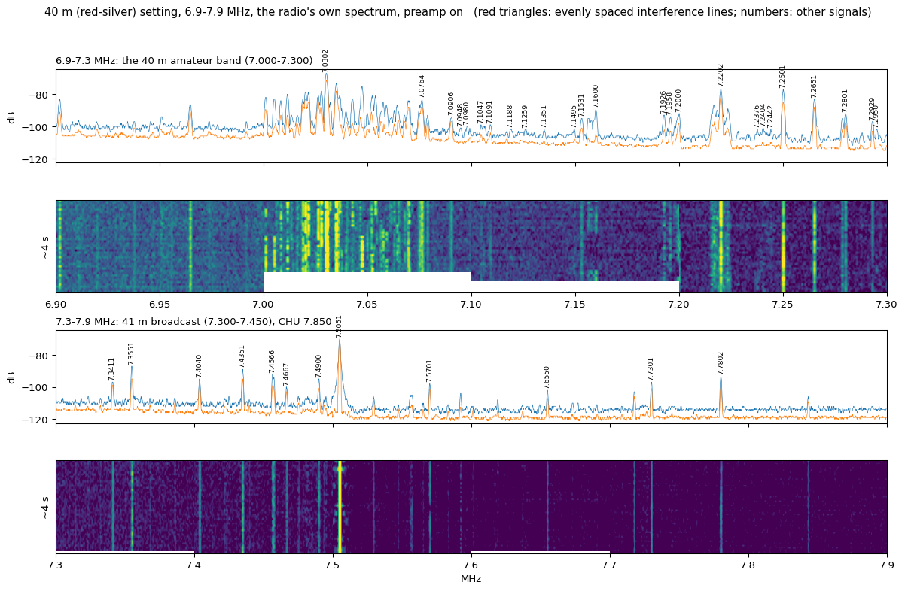
Red-silver CW (Morse), ARRL Sweepstakes 7.0295 MHz USB · 02:41:43 UTC · 30 s · S-meter None dBm
Tuned from the spectrum to the strongest CW (7.0302). Sweepstakes at 46 WPM, a noisy copy: K5KU calling (SS K5KU) and a 'TU' comes through.
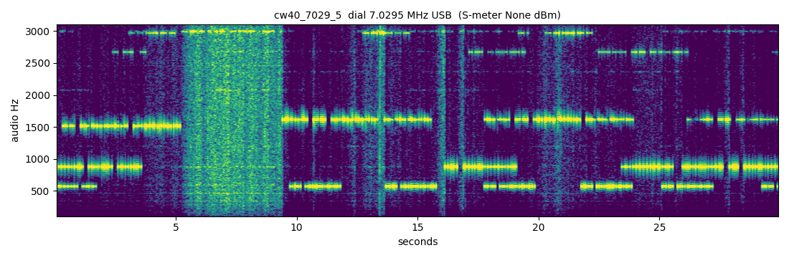
- tone 573 Hz, 46 WPM: H1 LA IPEEH**I* EE* IE TU K6KU UD K5KU E SS K5OK WS K1OK DD K5KU SS T
Red-silver CW (Morse), ARRL Sweepstakes 7.0400 MHz USB · 02:42:16 UTC · 30 s · S-meter None dBm
The CW group at 7.040-7.043: W6PH calling CQ SS twice, and part of an exchange from WA6KHK (serial 508, class B).
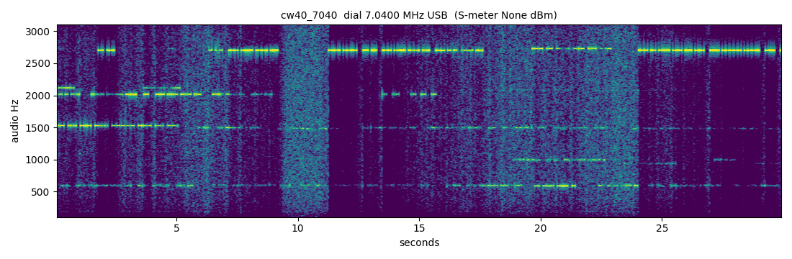
- tone 2703 Hz, 26 WPM: NR ETV W6PH E CQ SS W6PH W6PH E WAT EKHEA WA6KHK 508 B I
Red-silver SSB voice (LSB) 7.2245 MHz LSB · 02:42:54 UTC · 25 s · S-meter None dBm
The strongest voice in the spectrum (7.2202), tuned from the zoomed spectrum to 7.2245 LSB: a voice QSO, clear speech.
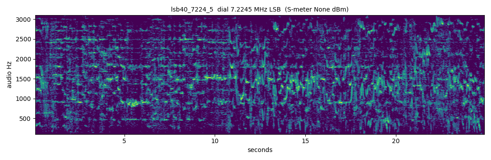
Red-silver SSB voice (LSB) 7.2510 MHz LSB · 02:43:27 UTC · 25 s · S-meter None dBm
Voice at 7.2501 recorded in LSB: speech, but with a steady 1 kHz whistle, a carrier at 7.250: this is an AM signal. The AM recording below is the right way to hear it.
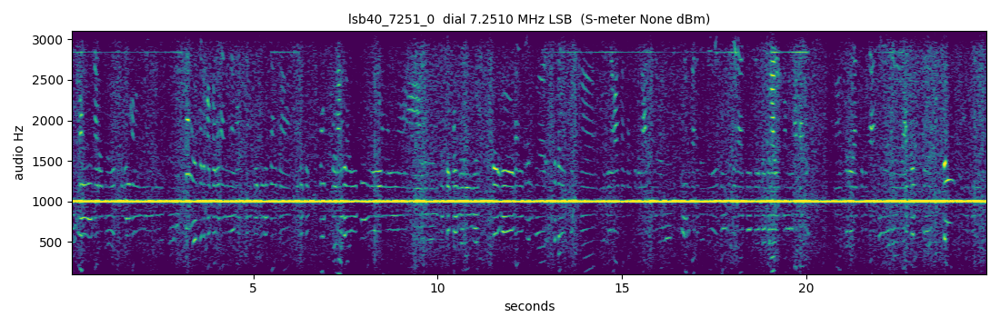
Red-silver SSB voice (LSB) 7.2660 MHz LSB · 02:44:00 UTC · 25 s · S-meter None dBm
Voice at 7.2651 in LSB: speech with the same 1 kHz whistle, an AM signal (carrier 7.265). See the AM recording below.
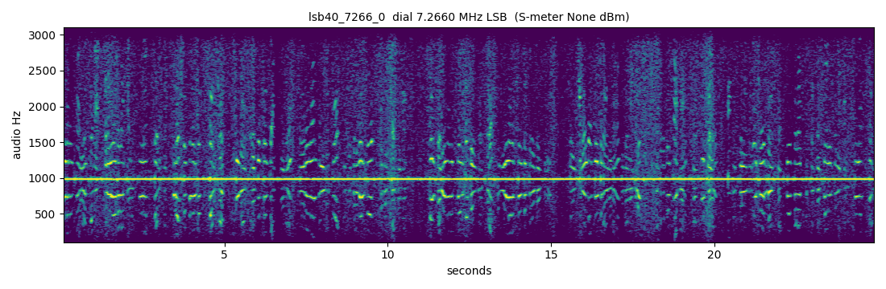
Red-silver SSB voice (LSB) 7.1600 MHz LSB · 02:44:33 UTC · 25 s · S-meter None dBm
Voice at 7.1600, tuned from the zoomed spectrum to 7.160 LSB.
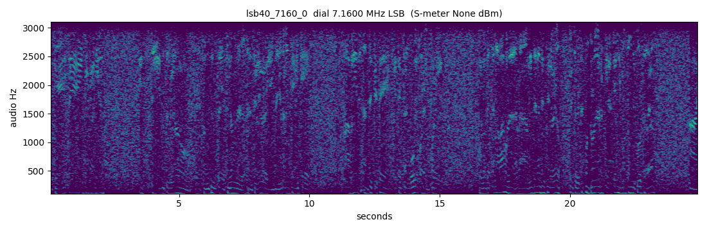
Red-silver Shortwave broadcast 7.5050 MHz AM · 02:45:01 UTC · 20 s · S-meter None dBm
The strongest broadcaster on the sweep, 7.505 MHz (WRNO, New Orleans, uses this frequency): clear speech and music.
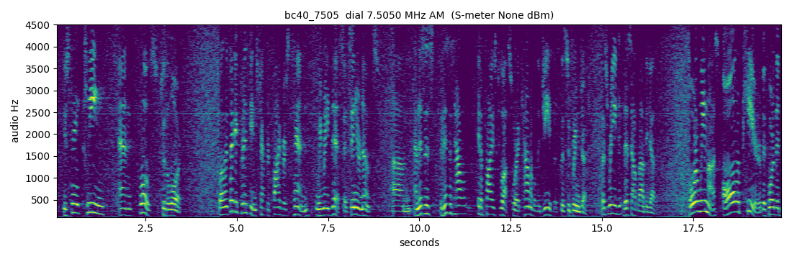
Red-silver Shortwave broadcast 7.3550 MHz AM · 02:45:23 UTC · 20 s · S-meter None dBm
41 m broadcast, 7.355 MHz: weaker, programme audio under the noise.
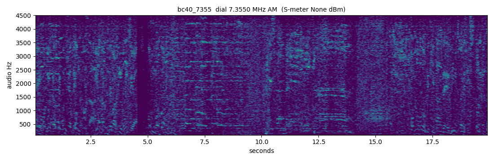
Red-silver Shortwave broadcast 7.4900 MHz AM · 02:45:45 UTC · 20 s · S-meter None dBm
41 m broadcast, 7.490 MHz (a frequency WBCQ uses).
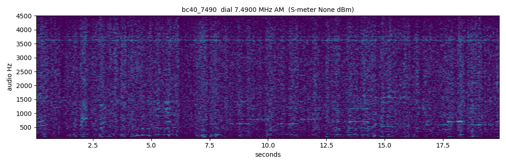
Red-silver Shortwave broadcast 7.5700 MHz AM · 02:46:08 UTC · 20 s · S-meter None dBm
41 m broadcast, 7.570 MHz (a frequency WRMI uses).
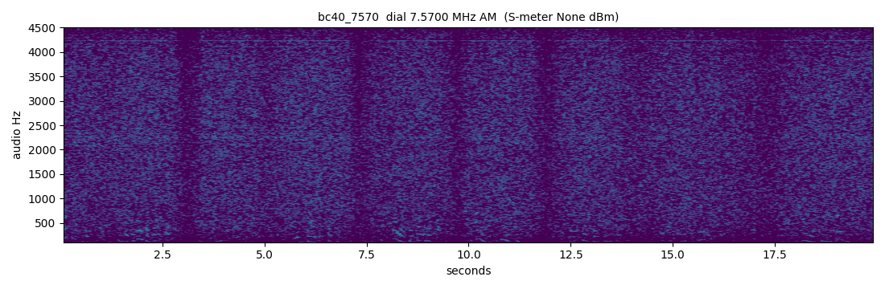
Red-silver CHU, Canada's time station 7.8500 MHz AM · 02:46:30 UTC · 20 s · S-meter None dBm
CHU (Ottawa) not heard: noise only, and nothing showed at 7.850 in the spectrum.
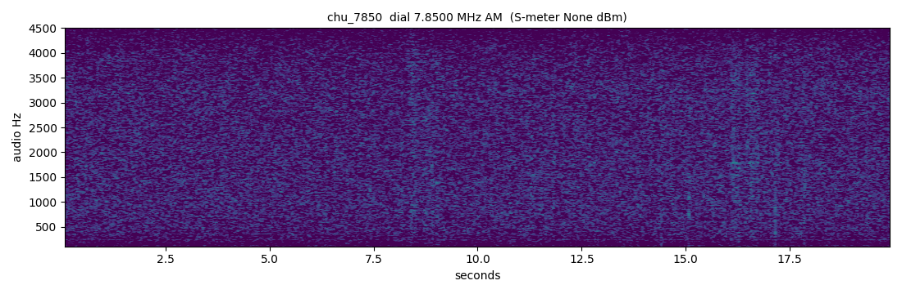
Red-silver PSK31 7.0695 MHz USB · 02:46:53 UTC · 30 s · S-meter None dBm
PSK31 window: the decoder's output was noise letters only, no real copy (it decodes a test signal exactly).
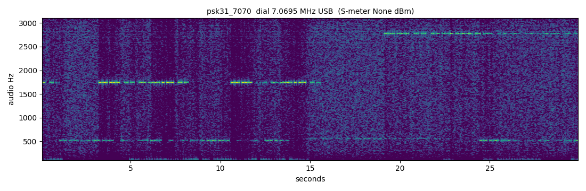
- nothing decoded in this recording
Red-silver RTTY 7.0890 MHz USB · 02:47:26 UTC · 30 s · S-meter None dBm
The digital group at 7.0906-7.098: not RTTY that decodes; the output was noise letters only.
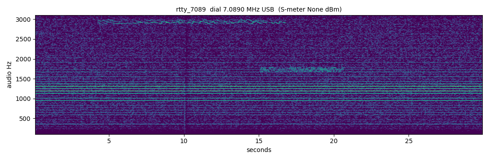
- nothing decoded in this recording
Red-silver FT4 7.0475 MHz USB · 02:48:07 UTC · 31 s · S-meter None dBm
FT4: KM6TAU and KQ4CRY finishing a contact (R-10, then R-14).
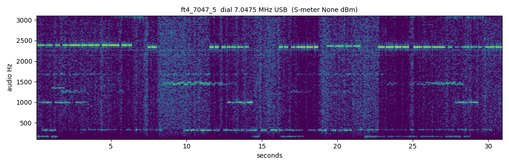
- 02:48:15 KM6TAU KQ4CRY R-10
- 02:48:30 KM6TAU KQ4CRY R-14
Red-silver JS8Call 7.0780 MHz USB · 02:48:44 UTC · 46 s · S-meter None dBm
JS8, decoded offline with the radio's own JS8 receiver (tools/js8_play): W6CJ and K1KFX asking each other 'HW CPY?', and KF5NRU's heartbeat to W6CJ, at normal and turbo speeds.
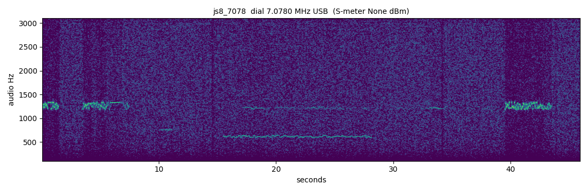
- ~02:48:52 -14 dB dt +0.0 1192.5 Hz turbo
- ~02:49:13 -21 dB dt -0.7 1195.2 Hz normal W6CJ: K1KFX HW CPY?
- ~02:49:13 -13 dB dt -0.4 597.4 Hz normal KF5NRU: W6CJ HEARTBEAT SNR -13
- ~02:49:28 -10 dB dt +0.0 1197.5 Hz turbo K1KFX: W6CJ HW CPY?
Red-silver WSPR beacons 7.0386 MHz USB · 02:49:59 UTC · 116 s · S-meter None dBm
One 2-minute WSPR cycle (02:50 UTC) through the repo's wsprd: six stations, from Arizona to Oregon, including WW0WWV (the WWV amateur radio club, Colorado).
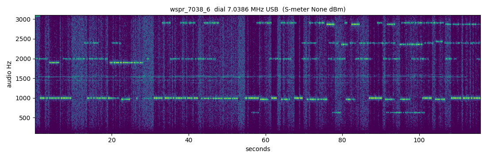
- -14 dB dt +0.2 7.040132 MHz drift +0 K5NAV DM55 23
- -19 dB dt -0.3 7.040142 MHz drift +0 N0KAM DN84 23
- -20 dB dt +0.9 7.040048 MHz drift +0 WW0WWV DN70 30
- -20 dB dt +0.0 7.040136 MHz drift +0 K7CMI DN57 27
- -21 dB dt -0.1 7.040169 MHz drift +0 KE7ZXJ CN95 33
- -23 dB dt -0.3 7.040185 MHz drift +0 AE0GQ DM79 23
Red-silver AM voice 7.2500 MHz AM · 02:55:08 UTC · 25 s · S-meter None dBm
The 7.250 voice in AM, as it is sent: no whistle.
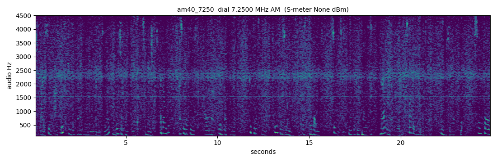
Red-silver AM voice 7.2650 MHz AM · 02:55:35 UTC · 25 s · S-meter None dBm
The 7.265 voice in AM.
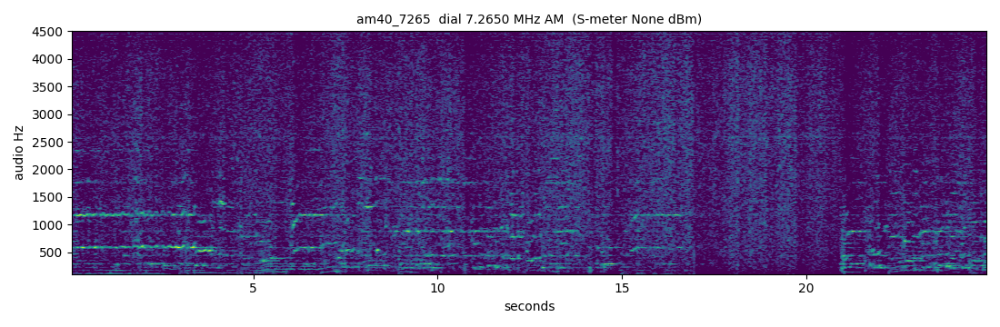
VHF on the same setting (the JPC-12 is not made for VHF; these came in anyway)
FM broadcast scan 03:34 UTC
All 101 channels, 87.9-107.9 MHz, wide FM, through the JPC-12 at its 40 m setting (not made for VHF). dB over the band's floor in the radio's spectrum; S-meter in dBm.
| Frequency | Level | S-meter |
|---|---|---|
| 92.3000 MHz | +39 dB | -82 dBm |
| 97.9000 MHz | +31 dB | -92 dBm |
| 103.9000 MHz | +29 dB | -90 dBm |
| 107.9000 MHz | +29 dB | -88 dBm |
| 104.9000 MHz | +27 dB | -94 dBm |
| 91.5000 MHz | +26 dB | -95 dBm |
| 94.7000 MHz | +26 dB | -88 dBm |
| 107.5000 MHz | +24 dB | -95 dBm |
| 106.7000 MHz | +23 dB | -98 dBm |
| 88.7000 MHz | +22 dB | -100 dBm |
| 89.7000 MHz | +22 dB | -90 dBm |
| 94.1000 MHz | +20 dB | -102 dBm |
| 97.1000 MHz | +20 dB | -92 dBm |
| 105.7000 MHz | +20 dB | -100 dBm |
| 95.5000 MHz | +18 dB | -104 dBm |
| 101.7000 MHz | +17 dB | -101 dBm |
Airband scan 03:46 UTC
118-137 MHz in 100 kHz views, about 3 s each (aircraft transmit in bursts; ATIS runs without a stop). Peak dB over the floor in the radio's spectrum.
| Frequency | Level | |
|---|---|---|
| 122.8750 MHz | +61 dB | |
| 122.9250 MHz | +58 dB | |
| 122.8250 MHz | +55 dB | |
| 122.9750 MHz | +41 dB | |
| 121.6750 MHz | +40 dB | |
| 124.0750 MHz | +40 dB | |
| 122.7750 MHz | +36 dB | |
| 122.8500 MHz | +35 dB | |
| 122.2750 MHz | +33 dB | |
| 122.9500 MHz | +32 dB | |
| 122.8000 MHz | +30 dB | |
| 122.9000 MHz | +30 dB | |
| 123.0250 MHz | +29 dB | |
| 122.7250 MHz | +27 dB | |
| 123.0000 MHz | +27 dB | |
| 123.7000 MHz | +27 dB |
2 m and beyond: the base tuned directly 03:53 and 03:55 UTC, GUI stopped about a minute each, coil at red-silver
The base tuned directly over I2C (frequency and mode registers only, nothing transmitted) and its own spectrum packets read at each frequency. 92.3 MHz FM is the check that the method works. Above 122.88 MHz the base hears the mirror of what lies below it: 153.46 MHz reads exactly as 92.3 FM does (2 x 122.88 - 92.3), 137.86 is 107.9 FM and 141.86 is 103.9 FM. The X6200 samples at 122.88 MHz (its clock also leaks in at 122.880, +59 dB) and reaches VHF through aliasing, so 144-148 MHz lands on the mirror of 97.8-101.8 MHz FM broadcast: no APRS, ISS or NOAA Weather signal came through, and none can without different hardware (the WR12).
| Frequency | Target | Packets | Peak at the dial | Packets with a signal | S-meter median / max |
|---|---|---|---|---|---|
| 92.3000 MHz | FM 92.3 control (+39 dB in the GUI scan) | 62 | +35 dB | 62 | -80 / -79 |
| 14.0740 MHz | HF control 14.074 FT8 | 47 | +19 dB | 47 | -118 / -116 |
| 122.8800 MHz | 122.880: the suspected ADC-clock spur | 63 | +59 dB | 63 | -108 / -103 |
| 136.9750 MHz | top of the airband 136.975 | 62 | +7 dB | 0 | -135 / -133 |
| 137.1000 MHz | 137.1 weather satellites (just above the airband) | 63 | +10 dB | 5 | -124 / -122 |
| 137.9125 MHz | 137.9125 weather satellites | 62 | +33 dB | 57 | -109 / -102 |
| 144.3900 MHz | APRS 144.390 (packets every few seconds) | 63 | +9 dB | 0 | -124 / -121 |
| 145.8000 MHz | ISS downlink 145.800 (only during a pass) | 62 | +9 dB | 0 | -124 / -122 |
| 146.5200 MHz | 2 m simplex 146.520 | 63 | +12 dB | 8 | -123 / -120 |
| 146.7600 MHz | 2 m repeater band 146.760 | 62 | +9 dB | 0 | -124 / -122 |
| 162.4000 MHz | NOAA Weather Radio 162.400 | 63 | +10 dB | 1 | -124 / -121 |
| 162.5500 MHz | NOAA Weather Radio 162.550 | 62 | +10 dB | 4 | -124 / -123 |
| 92.3000 MHz | FM 92.3 control again | 47 | +34 dB | 47 | -80 / -79 |
| 92.3000 MHz | FM 92.3 control | 63 | +34 dB | 63 | -80 / -79 |
| 153.4600 MHz | 153.46 = 245.76 - 92.3: the mirror of 92.3? | 62 | +34 dB | 62 | -80 / -79 |
| 137.8600 MHz | 137.86 = 245.76 - 107.9: the mirror of 107.9? | 63 | +38 dB | 62 | -86 / -85 |
| 141.8600 MHz | 141.86 = 245.76 - 103.9: the mirror of 103.9? | 48 | +27 dB | 48 | -88 / -87 |
| 150.0000 MHz | 150.00: no FM station mirrors here (95.76) | 47 | +9 dB | 0 | -102 / -102 |
| 92.3000 MHz | FM 92.3 control again | 47 | +31 dB | 47 | -80 / -79 |
Red-silver FM broadcast 92.3000 MHz WFM · 03:34:48 UTC · 15 s · S-meter None dBm
FM broadcast channel found by the scan, +39 dB
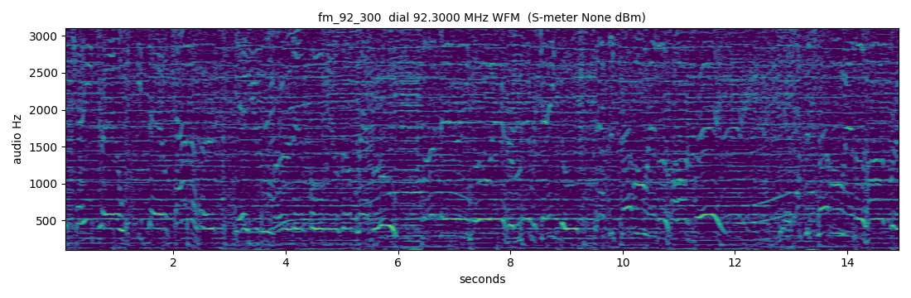
Red-silver FM broadcast 97.9000 MHz WFM · 03:35:05 UTC · 15 s · S-meter None dBm
FM broadcast channel found by the scan, +31 dB
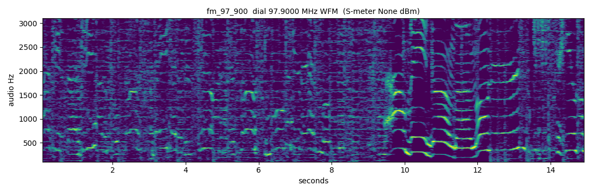
Red-silver FM broadcast 103.9000 MHz WFM · 03:35:21 UTC · 15 s · S-meter None dBm
FM broadcast channel found by the scan, +29 dB
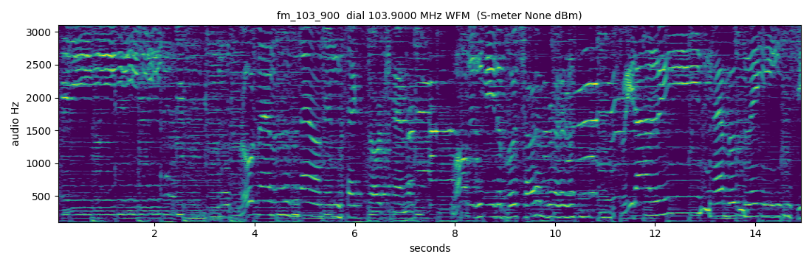
Red-silver Airband (aircraft, ATIS) 122.8750 MHz AM · 03:46:27 UTC · 25 s · S-meter None dBm
Around the radio's own 122.880 MHz clock spur (+59 dB): the airband scan's 'busiest' channels were the spur, not aircraft.
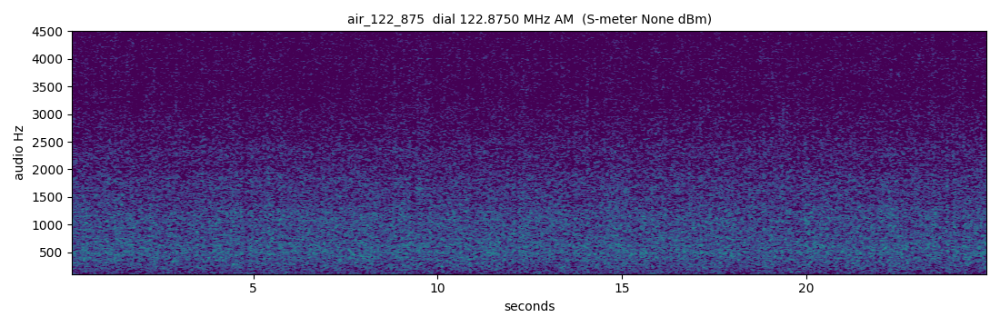
Red-silver Airband (aircraft, ATIS) 122.9250 MHz AM · 03:46:53 UTC · 25 s · S-meter None dBm
Around the radio's own 122.880 MHz clock spur (+59 dB): the airband scan's 'busiest' channels were the spur, not aircraft.
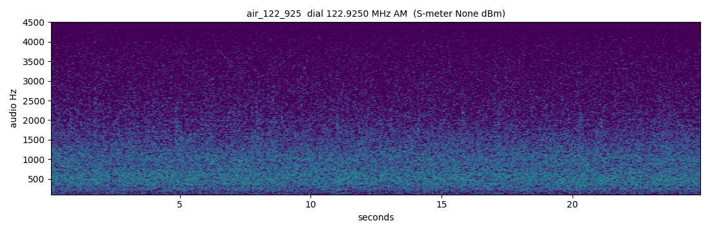
Red-silver Airband (aircraft, ATIS) 122.8250 MHz AM · 03:47:20 UTC · 25 s · S-meter None dBm
Around the radio's own 122.880 MHz clock spur (+59 dB): the airband scan's 'busiest' channels were the spur, not aircraft.
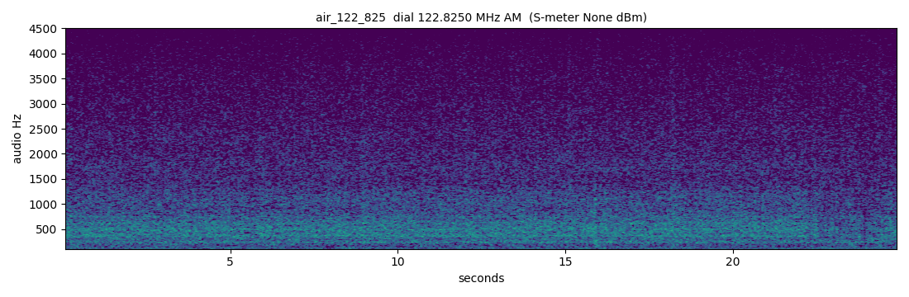
Red-silver Airband (aircraft, ATIS) 122.9750 MHz AM · 03:47:47 UTC · 25 s · S-meter None dBm
Around the radio's own 122.880 MHz clock spur (+59 dB): the airband scan's 'busiest' channels were the spur, not aircraft.
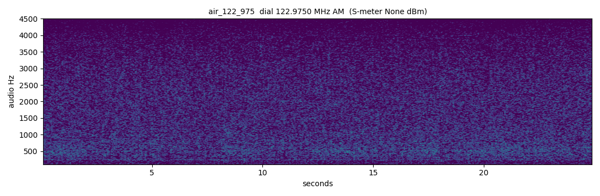
Red-silver Airband (aircraft, ATIS) 121.6750 MHz AM · 03:56:45 UTC · 30 s · S-meter None dBm
A steady carrier, no speech.
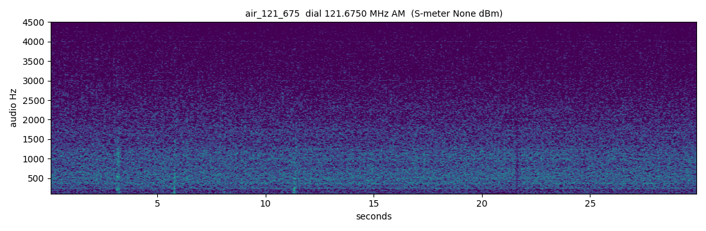
Red-silver Airband (aircraft, ATIS) 124.0750 MHz AM · 03:57:17 UTC · 30 s · S-meter None dBm
A steady carrier, no speech.
Midway: 30 m (10 MHz)
Slider midway between the two marks, set by eye.
- On the air
- 04:19-04:28 UTC
11:19-11:28 PM EST - Tunes
- 30 m (10 MHz)
- Preamp
- off
- Recordings
- 1
- FT8 on 10.136
- 79 messages
17 stations, 5 countries
Farthest FT8 stations (from their grid squares): HC1HC Ecuador (4,534 km), W7IUV United States (2,966 km), NP4VA Puerto Rico (2,855 km).
Everything heard at this setting in time order; click a frequency to jump to it
| UTC | Frequency | Mode | What | Result |
|---|---|---|---|---|
| 04:19-04:28 | 10.136 MHz | USB | FT8 (in FT8 Live) | 79 messages, 17 stations, 5 countries; 2.6 per 15 s slot |
| 04:19 | 9.4-10.25 MHz | - | Spectrum: everything this setting reaches | a picture of the whole range, below |
| 04:20 | 10.0000 MHz | AM | WWV/WWVH time station | WWV/WWVH on 10.000 MHz, AM, 62 s with the coil midway (30 m). |
Everything the midway setting reaches 9.4-10.25 MHz, 04:19 UTC, charger off
The 31 m broadcast band (strongest 9.455 and 9.955 MHz), WWV on 10.000 MHz (+33 dB, steady carrier), and 30 m FT8 at 10.136 MHz. Cut short by condensation on the coil and whip.
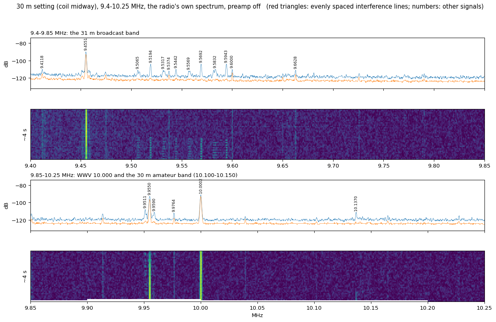
Midway WWV/WWVH time station 10.0000 MHz AM · 04:20:05 UTC · 62 s · S-meter -114.8 dBm
WWV/WWVH on 10.000 MHz, AM, 62 s with the coil midway (30 m). S-meter median -115 dBm, peak -110 dBm.
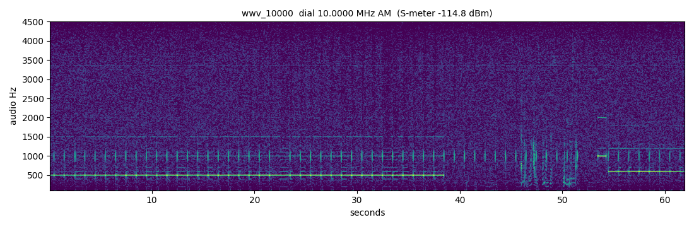